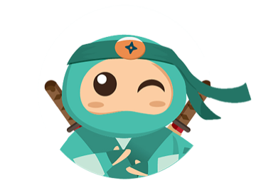

Câu điều kiện
0123
khác nhau ở đâu?
Càng xa sự thật,
động từ càng lùi về quá khứ
Loại 0luôn luôn đúng
If it rains,
the ground gets wet.
Trời mưa thì đất ướt.
If + hiện tại đơn, hiện tại đơn
Loại 1có thể xảy ra
If it rains tomorrow,
I will stay home.
Mai mà mưa, tôi sẽ ở nhà.
If + hiện tại đơn, will + V
Loại 2không có thật
ở hiện tại
If it rained now,
I would stay home.
Nếu bây giờ trời mưa, tôi sẽ ở nhà.Thực tế: bây giờ không mưa
If + quá khứ đơn, would + Vrains → rained will → would
Loại 3không có thật
ở quá khứ
If it had rained yesterday,
I would have stayed home.
Nếu hôm qua trời mưa, tôi đã ở nhà.Thực tế: hôm qua không mưa, tôi đã ra ngoài
If + had V3, would have + V3rained → had rained would → would have
luôn luôn đúng
If it rains, the ground gets wet.
có thể xảy ra
If it rains tomorrow, I will stay home.
không thật ở hiện tại
If it rained now, I would stay home.
không thật ở quá khứ
If it had rained yesterday, I would have stayed home.
Càng xa sự thật, càng lùi thì
If I more time,
I would learn Japanese.
Nếu có nhiều thời gian hơn, tôi sẽ học tiếng Nhật.
Loại 2: bây giờ không có thời gian
Lưu lại để ôn tập nhé

Migii TOEIC
Bấm theo dõi
kênh nhé!
Mỗi video một mẹo ngữ pháp
ngắn gọn, dễ nhớ